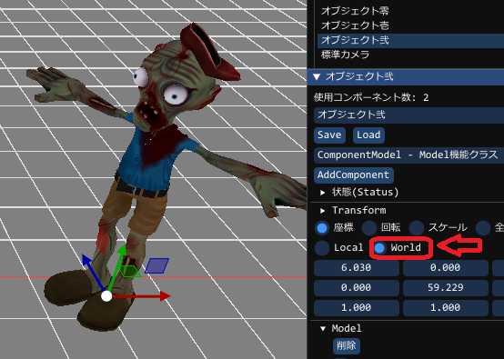
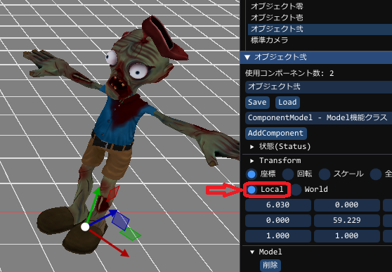
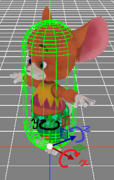

ComponentTransformの機能
GUIで説明してきたのでお分かりかと思いますが、位置・回転・スケールを変更したり確認したりできるコンポーネントです。
このコンポーネントは基本的にObjectと同じ処理ですのでこの方法を使う必要はありません。
Transformをプログラムで使用する方法と全く同じ効果なのでこちらを使うメリットはとくにはありません
ComponentTransformの使い方
// objはすでに作成済みのObject。
// 取得することで可能になります
if (auto transform = obj->GetComponent<ComponentTransform>() )
{
// ここでtransformが ComponentTransformとして使用可能となります。
// 下記のコードはこの中で利用可能です
}
移動方法
移動に関しては以下の種類あります
float3 位置 = {100,0,0};
transform->SetTranslate( 位置 ); // 位置(100,0,0)に移動します
float3 移動量 = {1,0,0};
transform->AddTranslate( 移動量 ); // 今の位置より(1,0,0)だけワールド座標で移動します
float3 移動量 = {1,0,0};
transform->AddTranslate( 移動量, true ); // 今の位置より(1,0,0)だけローカル座標で移動します
ワールド座標系
ローカル座標系
回転方法
回転方法には数種類の方法が用意されています軸に対し、以下のような回転動作を行います

X軸では前後に倒れるような回転
Y軸では左右に向くような回転
Z軸では横に寝るような回転
※軸に対して常に時計回りの方向がプラスとなります
移動・回転・スケールもご覧ください
// グローバル方向が北とすると、東の方向を向くことになります
float3 回転 = { 0, 90, 0 };
transform->SetRotationAxisXYZ( 回転 ); // グローバルに対し常にY軸回転90度の方向を向く
// Updateなどで行うと常に回転し続けます
float3 加回転 = { 0, 1, 0 };
transform->AddRotationAxisXYZ( 加回転 ); // 現在の回転から、Y軸回転1度回転する
// いきなり指定した方向ベクトルに向けます
float3 方向 = { 100, 100, 0 };
transform->SetRotationToVector( 方向 ); // 方向(100,100,0)の方向に向けます
// いきなり指定した方向ベクトルに向けます(Objectの方向も考慮されます)
float3 方向 = { 100, 100, 0 };
transform->SetRotationToVectorOnParent( 方向 ); // 方向(100,100,0)の方向に向けます
// いきなり指定した位置の方向に向けます(自動的にObjectの方向も考慮されます)
float3 位置 = { 100, 100, 0 };
transform->SetRotationToPosition( 加回転 ); // 現在の位置で、位置(100,100,0)の方向に向けます
// 指定した方向ベクトルに少しだけ向けます
float3 方向 = { 100, 100, 0 };
float3 制限角度 = 3.0f;
transform->SetRotationToVectorWithLimit( 方向, 制限角度 ); // 方向(100,100,0)の方向に制限角度分(3.0f度)向けます
// 指定した方向ベクトルに少しだけ向けます(Objectの回転も考慮します)
float3 方向 = { 100, 100, 0 };
float3 制限角度 = 3.0f;
transform->SetRotationToVectorOnParentWithLimit( 方向, 制限角度 ); // 方向(100,100,0)の方向に制限角度分(3.0f度)向けます
// 指定位置方向に少しだけ向けます(自動的にObjectの回転も考慮します)
float3 方向 = { 100, 100, 0 };
float3 制限角度 = 3.0f;
transform->SetRotationToPositionWithLimit( 方向, 制限角度 ); // 方向(100,100,0)の方向に制限角度分(3.0f度)向けます
拡大縮小方法
拡大縮小は以下の方法のみ用意してあります
// 指定したスケーリングサイズに設定します
float3 スケール = { 2.0f, 2.0f, 2.0f };
transform->SetScaleAxisXYZ( スケール ); // スケール(2,2,2)、2倍のスケールに設定する
位置取得方法
取得には2種類存在します
float3 位置 = transform->GetTranslate(); // 位置が取得できます
float3& 位置 = transform->Translate(); // 位置が取得できますが参照です。よってその後の書き換えが可能。
位置 = {100,100,100}; // 位置を(100,100,100)に移動させる。 SetTranslateと同等。
回転取得方法
取得方法は以下のものを用意しています
float3 軸回転 = transform->GetRotationAxisXYZ(); // X軸Y軸Z軸に対する回転が取得できます
スケール取得方法
取得方法は以下のものを用意しています
float3 軸スケール = transform->GetScaleAxisXYZ(); // X軸Y軸Z軸に対するスケールが取得できます
Matrix(位置・回転・スケール)の取得方法
matrix コンポーネントのMatrix = transform->GetMatrix(); // Matrixが取得できます
実際のMatrixは、こちらで取得するほうが楽です
matrix ワールド座標系Matrix = transform->GetWorldMatrix(); // 親に依存したMatrixが取得されます
matrix ワールド座標系Matrix = transform->GetOldWorldMatrix(); // 以前の親に依存したMatrixが取得されます
Transformの向いている方向からターゲットへの角度を取得
// 自分の向きからターゲットの角度を取得します
float3 ターゲット座標 = {100,0,100}
matrix ワールド座標系Matrix = transform->GetDegreeToPosition( ターゲット座標 );
// 自分の向きからターゲットの角度を取得します
float3 ターゲット方向 = target_obj->GetTranslate() - transform->GetTranslate();
matrix ワールド座標系Matrix = transform->GetDegreeToVector( ターゲット方向 );